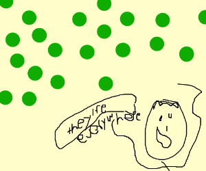

Piece (1960 Winter)
Carry a bag of
. Leave a
wherever you go.
/

 Piece (1960 Winter).
Leave a wherever you go.Piece (1960 Winter).
Leave a wherever you go.
Piece (1960 Winter).
Leave a wherever you go.Piece (1960 Winter).
Leave a wherever you go.